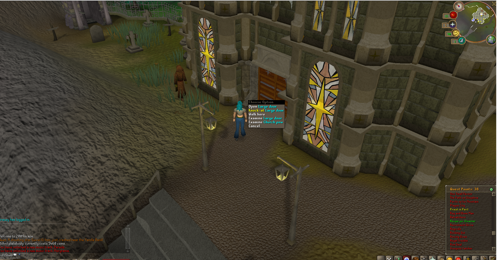
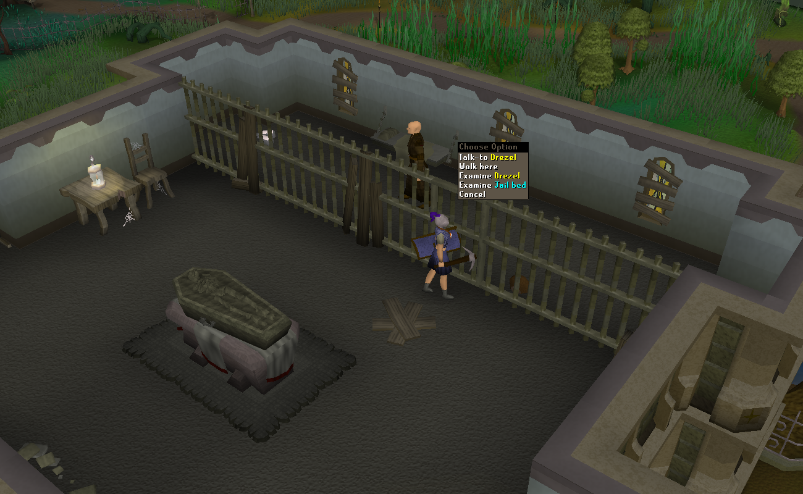
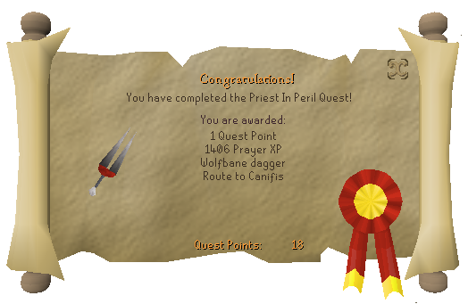

Priest In Peril
King Roald would be very interested to know what has caused this lack of communication, and seeks an adventurer willing to report back to him on the situation.
- Be able to get rune essence ( For ironmen may need to complete Rune Mystery )
- Be able to defeat a level 30 enemy
To get started make your way to Varrock's Castle and speak with King Roald. when you get there you will ask if there are any quests you could go on. He states that he will pay you to go check on his priest Drezel who has not contacted him in a few days.
Make your way over to the far west of past the gates of the west Varrock bank. Head over to the chapel and click on "knock-on" option of the doors. They will task you with killing the dog that guards tha basement a little north from there. Take the trap door down and kill the dog. Once you have killed the dog speak to them again and they will laugh saying to go talk to the king.
Once you have made it back to the King he will basically call you dumb for killing the dog and if you do not go back and find out what really happened to Drezel he will have your head. To save some time this is when you head over to the kitchen of the castle and climb upstairs to find a bucket in the room to the right. Grab the bucket and make sure you are still wearing your armour. You make your way back to the church and instead of knocking this time you bust down those doors! Head up stairs and then head up the ladder to find Drezel in the jail cell. Select the "talk-to" option on the jail door. He will tell you that you will need to go find the gold key in order to get the iron key back. To find the gold key you will need to start killing the monks in order to get the drop.
Once you have the key, make your way out of the church and back down into the dungeon where you slain that poor puppy. Head to the room where all the statues surround the well. Find the statue that has the iron key and click the gold key onto the statue to make the switch. Once you have done that use your bucket on the well to get water.
Now head back towards the church and head back up stairs twice again. Speak to Drezel and he will take the key from you. The issue now is the vampire in the coffin is giving him the spooks, so you will need to ensure his safety by pouring blessed water on him. Talk to Drezel so he can bless your water for you. Use the blessed water on the coffin and return to Drezel. Drezel will then tell you to meet him down in that basement again where you killed the dog.
Now, the smart thing to do while you are already outside the church is to head towards the bank. If you are an Ironman, you will want to have completed The Rune Mysteries quest in order to mine rune essence yourself. Unless you have rune pouches or a pak yak you will need to make two trips for this. Once you have your first set of runes, head over to the same place where you killed the dog. This time you will go all the way to the west side and you will find Drezel through that door. He will say that you can help him fix what he needs by bringing him 50 rune essence or pure essence. So do your rounds of 25 and 25 make sure your last trip you have an inventory space free. And after you turned into the runes the quest will be complete! Congrats on completion!
